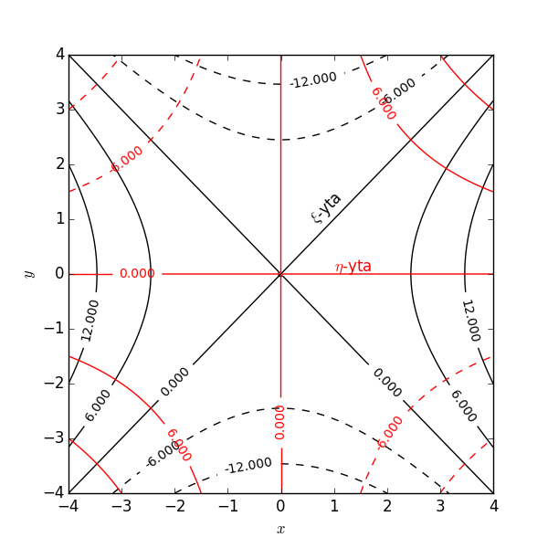

Allmänt behöver vi tre parametrar \( u_1, u_2, u_3 \) för att beskriva en godtycklig punkt i rummet. Jämför med generaliserade koordinater i analytisk mekanik. Vi kan då skriva ortsvektorn som \( \vec{r}(u_1, u_2, u_3) \).
Om vi då håller en av parametrarna, säg \( u_1 \), fix och låter \( u_2 \) och \( u_3 \) variera, så får vi en två-dimensionell yta, vilken vi kallar \( u_1 \)-ytan. På samma sätt kan vi då definiera ytor för de andra koordinaterna. Två koordinatytor, till exempel de för koordinaterna \( u_2 \) och \( u_3 \), skär varandra längs en en-dimensionell kurva. Längs denna kurva kommer då bara koordinaten \( u_1 \) att variera, så denna kurva är en koordinatkurva för \( u_1 \).
Koordinatytorna för \( \rho, \phi, z \) är då en cylinder med \( z \)-axeln som symmetriaxel och med radien \( \rho \), ett plan som utgår från \( z \)-axeln och bildar en vinkel \( \phi \) med \( x \)-axeln, samt ett plan parallellt med \( xy \)-planet och med \( z \)-koordinaten \( z \).

Koordinatlinjerna för \( \rho, \phi, z \) blir då en stråle som utgår från \( z \)-axeln och bildar vinkeln \( \phi \) med \( x \)-axeln, en cirkel med radien \( \rho \) och en linje parallell med \( z \)-axeln.
Tänk nu på att den partiella derivatan \( \partial \vec{r}/\partial u_1 \) är definierad som derivatan då vi håller \( u_2 \) och \( u_3 \) fixa. Därför måste \( \partial \vec{r}/\partial u_1 \) vara en tangentvektor till koordinatkurvan för \( u_1 \). Vi kan då definiera en enhetsvektor för \( u_1 \) som $$ \begin{equation} \hat{e}_1 = \frac{1}{h_1} \frac{\partial \vec{r}}{\partial u_1}, \tag{2} \end{equation} $$ där $$ \begin{equation} h_1 = \left|\frac{\partial \vec{r}}{\partial u_1}\right| \tag{3} \end{equation} $$ kallas för skalfaktorn. På samma sätt kan vi bestämma skalfaktorer och enhetsvektorer till \( u_2 \) och \( u_3 \). Förskjutningsvektorn \( \mbox{d}\vec{r} \) kan vi nu skriva som $$ \begin{equation} \mbox{d}\vec{r} = h_1\hat{e}_1 \mbox{d}u_1 + h_2\hat{e}_2\mbox{d}u_2 + h_3\hat{e}_3\mbox{d}u_3. \tag{4} \end{equation} $$
I fortsättningen skall vi begränsa oss till koordinatsystem med ortogonala enhetsvektorer, dvs $$ \begin{equation} \hat{e}_i \cdot \hat{e}_j = \delta_{ij} = \left\{ \begin{array}{ll} 1 & \,\mbox{om}\,\, i = j \\ 0 & \,\mbox{annars}\\ \end{array}\right. \tag{18} \end{equation} $$ där vi passat på att introducera Kroneckers delta, \( \delta_{ij} \).
Vi skall också anta att enhetsvektorerna bildar ett högersystem $$ \begin{equation} \hat{e}_1 \times \hat{e}_2 = \hat{e}_3 \tag{19} \end{equation} $$
Visa att enhetsvektorerna i de cylindriska koordinaterna uppfyller dessa villkor.
Vi kan nu härleda några användbara samband som båglängden längs en kurva $$ \begin{equation} \mbox{d}s^2 = \mbox{d}\vec{r}\cdot \mbox{d}\vec{r} = h_1^2\mbox{d}u_1^2 + h_2^2 \mbox{d}u_2^2 + h_3^2 \mbox{d}u_3^2. \tag{20} \end{equation} $$ Betrakta ovanstående båglängd för fallet då \( du_2=du_3=0 \). Det står då klart att vi kan tolka \( h_1 du_1 \) som båglängden \( ds_1 \), dvs som en infinitesimal förflyttning i \( u_1 \)-riktningen. Notera därför att \( h_i du_i \) alltid måste ha enheten längd.
Ett ytelement \( \mbox{d}\vec{S}_1 \) på koordinatytan \( u_1 \) är en rektangel som genereras av \( \mbox{d}u_2 \) och \( \mbox{d}u_3 \). Rektangelns sidor har då längderna \( h_2\mbox{d}u_2 \) och \( h_3\mbox{d}u_3 \). Ytelementet blir $$ \begin{equation} \mbox{d}\vec{S}_1 = \hat{e}_1 h_2 h_3 \mbox{d}u_2 \mbox{d}u_3, \tag{21} \end{equation} $$ och på samma sätt kan vi beräkna ytelementen på koordinatytorna för \( u_2 \) och \( u_3 \).
Analogt kan vi beräkna volymelementet som genereras av \( \mbox{d}u_1 \), \( \mbox{d}u_2 \) och \( \mbox{d}u_3 \), vilket blir $$ \begin{equation} \mbox{d}V = h_1 h_2 h_3 \mbox{d}u_1 \mbox{d}u_2 \mbox{d}u_3. \tag{22} \end{equation} $$
Betrakta ett skalärt fält \( \phi \). Om vi förflyttar oss en sträcka \( \mbox{d}\vec{r} \) så förändras \( \phi \) $$ \begin{equation} \mbox{d}\phi = \nabla \phi \cdot \mbox{d}\vec{r}. \tag{28} \end{equation} $$ Förflyttningen kan vi i de nya koordinaterna skriva som $$ \begin{equation} \mbox{d}\vec{r} = h_1 \hat{e}_1 \mbox{d}u_1 + h_2 \hat{e}_2 \mbox{d}u_2 + h_3 \hat{e}_3 \mbox{d}u_3. \tag{29} \end{equation} $$ Om vi skriver \( \phi \) som en funktion av \( u_1, u_2 \) och \( u_3 \) får vi $$ \begin{align} \mbox{d}\phi &= \frac{\partial \phi}{\partial u_1}\mbox{d}u_1 + \frac{\partial \phi}{\partial u_2}\mbox{d}u_2 + \frac{\partial \phi}{\partial u_3}\mbox{d}u_3 = \frac{1}{h_1} \frac{\partial \phi}{\partial u_1} h_1 \mbox{d}u_1 + \frac{1}{h_2} \frac{\partial \phi}{\partial u_2} h_2 \mbox{d}u_2 + \frac{1}{h_3} \frac{\partial \phi}{\partial u_3} h_3 \mbox{d}u_3 \nonumber \\ &= \left(\frac{1}{h_1} \frac{\partial \phi}{\partial u_1} \hat{e}_1 + \frac{1}{h_2} \frac{\partial \phi}{\partial u_2} \hat{e}_2 + \frac{1}{h_3} \frac{\partial \phi}{\partial u_3} \hat{e}_3\right) \cdot \mbox{d}\vec{r} \tag{30} \end{align} $$ Då kan vi identifiera uttrycket inom parentesen som gradienten i de nya koordinaterna \( u_1, u_2, u_3 \) $$ \begin{equation} \nabla \phi = \frac{1}{h_1} \frac{\partial \phi}{\partial u_1} \hat{e}_1 + \frac{1}{h_2} \frac{\partial \phi}{\partial u_2} \hat{e}_2 + \frac{1}{h_3} \frac{\partial \phi}{\partial u_3} \hat{e}_3. \tag{31} \end{equation} $$
För vilka värden på \( \alpha,\beta,\gamma \) har det tvådimensionella koordinatsystemet med koordinater \( \xi \) och \( \eta \), givna av $$ \begin{align} \xi &= x^2 - y^2 \tag{37}\\ \eta &= \alpha x^2 + \beta x y + \gamma y^2 \tag{38} \end{align} $$ ortogonala basvektorer?
Det andra sättet kräver istället \( \frac{\partial \xi}{\partial x} \) och \( \frac{\partial \xi}{\partial y} \) (samt motsvarande för \( \eta \)) och detta blir enkelt med de givna koordinattransformationerna. Vi får $$ \begin{align} \nabla \xi &= 2x \hat{x} - 2y \hat{y} \tag{39}\\ \nabla \eta &= (2 \alpha x + \beta y)\hat{x} + (\beta x + 2 \gamma y) \hat{y} \tag{40} \end{align} $$ vilket ger $$ \begin{equation} \nabla \xi \cdot \nabla \eta = 2x (2 \alpha x + \beta y) - 2 y (\beta x + 2 \gamma y) = 4 \alpha x^2 - 4 \gamma y^2 = 0. \tag{41} \end{equation} $$ Detta innebär att vi måste ha \( \alpha = \gamma = 0 \), medan \( \beta \) är godtyckligt.
import numpy as np
import pylab as p
# Make an x,y grid
grid = np.linspace(-4,4,100)
x, y = np.meshgrid(grid,grid)
# and the 2D fields
xi = x**2 - y**2
eta = x * y
p.figure(figsize=(6,6))
CS = p.contour(x,y,xi,5,colors='k')
p.clabel(CS, inline=1, fontsize=10)
p.text(0.5,1.3,r'$\xi$-yta',color='k',rotation=45)
CS = p.contour(x,y,eta,5,colors='r')
p.clabel(CS, inline=1, fontsize=10)
p.text(1,0.05,r'$\eta$-yta',color='r')
p.xlabel(r'$x$')
p.ylabel(r'$y$')
